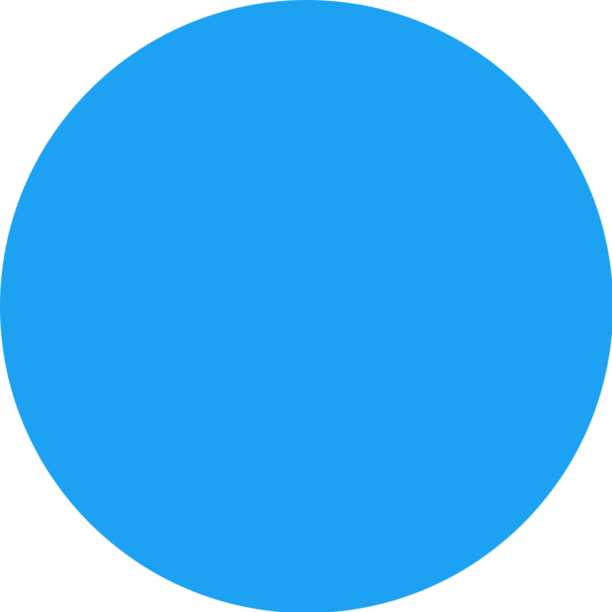
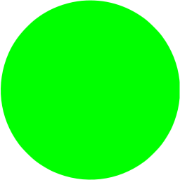
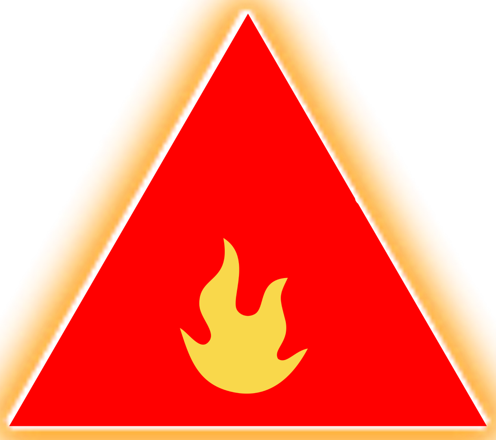

Rules
This game is a Tower Defense like, but we adapted it to be a reflection game.
But, what is a Tower Defense ?
Usually, this is a real-time strategy game, but in Polygon TD, there is no real-time reactions.
The main goal in these games is to kill incoming enemy creeps and prevent them from reaching a certain spot
on the map like the entrance to your base. To do this, build towers that will attack enemies.
Polygon TD has some differences with a normal Tower Defense :
- You can only add towers between ennemies' waves
- Before the next wave, you know exactly which type of ennemies will spawn and in which order
These differences make this game a reflection game only.
To build towers, there is a money system. Each time you win a wave, you earn some money.
You can lose the game by only one manner : If an enemy cross the map and reach base.
Ennemies
 The Orange circle is the standard ennemy. It has no particularity.
The Orange circle is the standard ennemy. It has no particularity.
 The Light Blue circle is weaker than the standard ennemi, but it spawn in group.
 The lime circle is a big boy. It tanks more damages than the others one and he completely tanks the first shoot.
Towers
 The grey tower is the standard one. It deals damage but has no other effect like the others towers.
The grey tower is the standard one. It deals damage but has no other effect like the others towers.
 The blue tower deals the same damages as the others one, but it applies a weakness effect to the ennemies.
The blue tower deals the same damages as the others one, but it applies a weakness effect to the ennemies.
 The red tower deals exactly the same damages for each attack, but it can shoot faster than others.
 The purple tower deals the same damages as the grey one, but the ennemi shot by this tower still takes damages during a certain time.
The purple tower deals the same damages as the grey one, but the ennemi shot by this tower still takes damages during a certain time.
 The yellow tower is a very slow one, but it deals a lot more damages at each shoot than the others.
The yellow tower is a very slow one, but it deals a lot more damages at each shoot than the others.